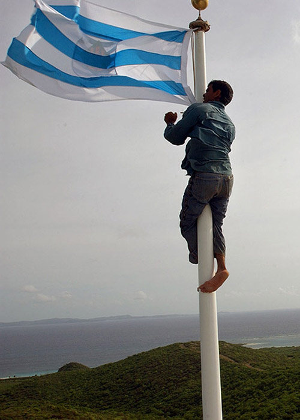

Alberto de Jesús, mejor conocido como Tito Kayak, realizó varias manifestaciones dentro y fuera de Puerto Rico como parte de la lucha para sacar la Marina de Vieques. En una de sus protestas, De Jesús se metió y amarró a uno de los tanques de Monte David en los terrenos restringidos. (Archivo / El Nuevo Día)
Tito Kayak realizó una singular manifestación en Nueva York al izar una bandera de Puerto Rico y otra de Vieques en el tope de la Estatua de la Libertad el 5 de noviembre de 2000. (Archivo / AP)
Tras bajarse de la Estatua de la Libertad, fue detenido. (Archivo / AP)
De Jesús fue arrestado por penetrar los terrenos de la Marina el 1 de junio de 2000. (Archivo / El Nuevo Día)
Tito Kayak cumplió un año de cárcel por desobediencia civil. En marzo de 2002, tras recuperar su libertad, volvió a la capilla ecuménica frente al Capitolio, donde lo recibieron decenas de activistas por Vieques. (Archivo / Primera Hora)
Alberto de Jesús izó la bandera de Vieques en el tope de la plataforma desde donde se observaban las prácticas bélicas en Vieques el 1 de mayo de 2003. Esa madrugada se produjeron disturbios para celebrar el fin de casi 60 años de bombardeo en Isla Nena. (Archivo / AP)